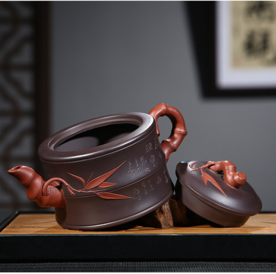
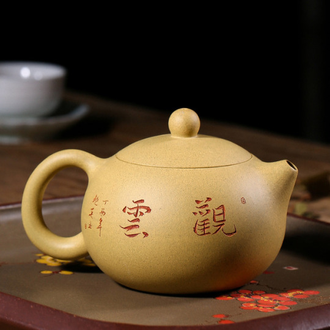
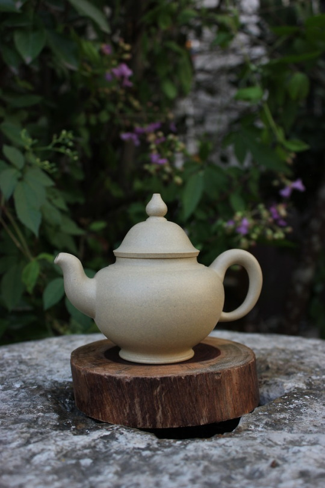
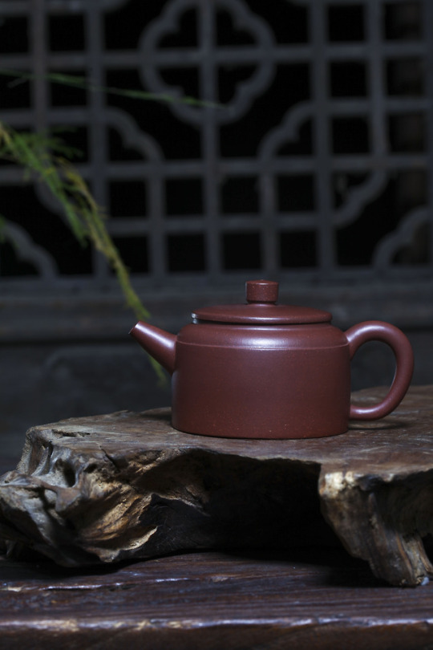

喜欢喝茶的人都想要的一把紫砂“活壶”是什么样的

一把“活壶”，一定是非常有灵性灵气的，能展现出“壶气养茶”的本领。
1、它会调节增加茶汤的醇厚感、柔滑度
――特别是红茶、白茶、普洱茶
（紫砂壶的内壁较粗糙，能有效地防止香气过早散失。长久使用的紫砂茶壶，内壁挂上一层棕红色茶锈，使用时间越长，茶锈积在内壁上越多，故冲泡茶叶后茶汤越加醇郁芳馨。）
2、它会有效祛焦去燥（焦气，燥火）
――特别是新茶（刚刚加工好的都有火气）、还有是火功比较重的茶叶，
比如是炒青、武夷岩茶、碳焙铁观音、新红茶、新白茶
（紫砂茶壶里外都不施釉，保持微小的气孔，透气性能好，避免焦气燥火味溶于水里）
3、它会更好的转化茶叶中的高沸点芳香物质
――特别是对于存放时间长的老茶，能够更好的唤醒，充分释放营养内质，
比如讲究长时间存放的茶叶，有白茶、普洱茶、红茶、黑茶
（ 紫砂壶散热慢，水温持久的特点能保持茶叶中芳香油遇热挥发而形成馨香）
4、它会自动挥散茶叶中因存放而产生的陈仓味
――更好的品尝老茶的芳华，
比如讲究长时间存放的茶叶，有白茶、普洱茶、红茶、黑茶
（紫砂壶里外都不施釉，保持微小的气孔，透气性能好，但又不透水，并具有较强的吸附力）
5、紫砂壶的灵性很适合泡茶新手
――对于泡术技巧要求降低，时间长一点、短一点；水温高点、低点等很多因素，紫砂壶可以进行灵性协调

*很多泡茶的朋友，特别是新手在泡茶过程中，遇到最烦心的事情，就是具体的器皿操作，以及很多细节之间的协调能力。
比如瓷器和玻璃等器皿，如果要实现上面的茶汤技巧效果，那至少需要3年以上的训练和锻炼，如果是有一把“活壶”，那么基本适应1-3个月就如老朋友得心应手了。

*紫砂壶作为泡茶器皿，不仅对茶汤有“识茶”的协助力，对主人的操作能力有很体贴，对于操作环境无要求，非常简便。
不像功夫茶那般需要很多的器具，仅仅只一把壶，就可以实现品饮，暖暖的端握在手心，非常适合相伴，天涯海角，只它足矣。适合任何人群，任何环境。

――由此可见，一把“活壶”是茶人最贴心的助手，称得上是主人的“爱宠”。
拥有一把具有灵性的协助功能的紫砂壶绝对是所有茶人心中的甜蜜。